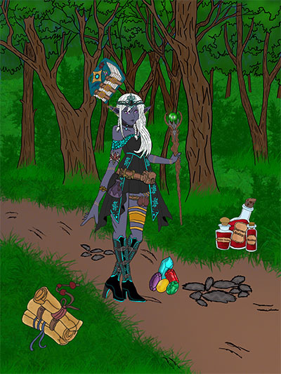
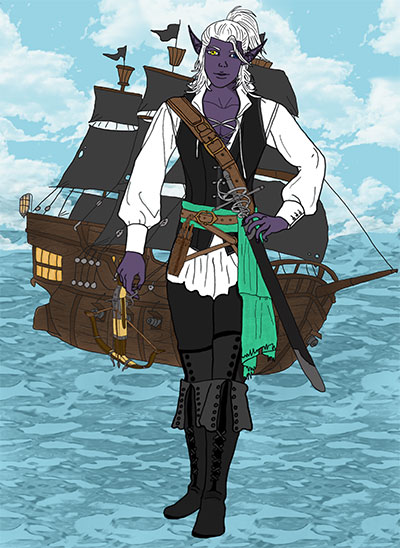
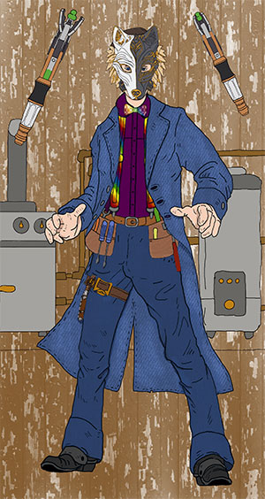
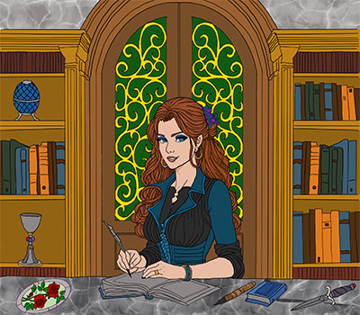
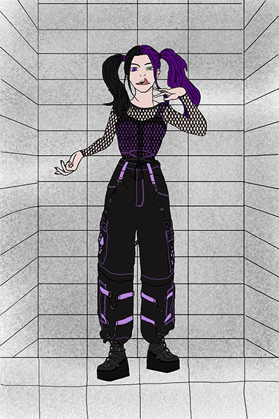
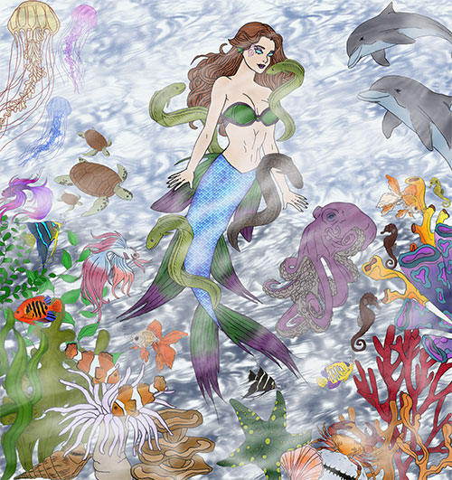

This is my Dungeons and Dragons character I created. She is a drow shadowfell sorceror. She always makes sure to be stocked up on potions and scrolls as she took a feat that allows her to use scrolls. She also carries her legendary staff called the Staff of the Magi. She has a bag of holding that helps her carry items anywhere she goes as well as a component pouch for her components she needs for her spells. She also carries gems to help her make money and also a couple that can help resurrect a fallen friend.
This is a friend of mine's Dungeons and Dragons character that I created for the same campaign we are in. Her character is a male drow that is a pirate rogue/monk. The character favors the rapier and a crossbow when it comes to defense and attacking. The character carries a crossbolt pouch full of bolts for the crossbow. The outfit matches that of a pirate as does the background ship behind him.
This character was based off the Matt Smith the 11th doctor from Doctor Who. It is for the Deadlands tabletop Roleplay Game. It is the character design that my other half wanted for his character. Also was asked to add in some machines into the background and a fox facemask as well.
Ember is a vampire for the vampire the masquerades who is a Toreador vampire who runs a bookstore and antique shop. She is my orignal character I created that was meant to look high up in life in fashion as well as the business she runs.
This is a malkavian vampire for vampire the masquerades who was meant to look like Harley Quinn. Also the background is that of an asylum. A friend of mine asked me to create her.
This is a mermaid/siren OC I created because I wanted to challenge myself to do an underwater scene that looked as though you were actually underwater.
